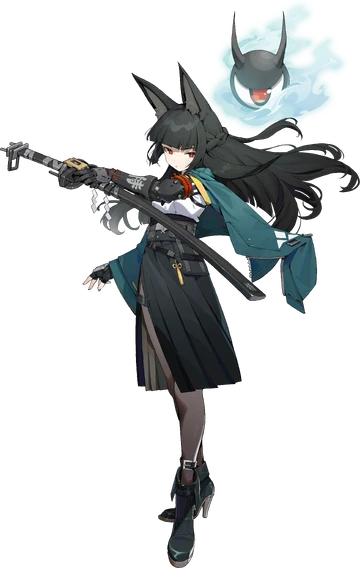

Favorite Characters from most to least
Meta defining character during the Fontaine era of Genshin Impact. Completely redefined the standard for future support units
Though anticipated as the most popular character in hsr, his dps turned out to be below the top meta defining characters at the time. But he continues to be prelevant in the meta as well as being one of the most well written character arcs in the amphorous chapter
One of the first Void Hunter released in Zenless and also one of the most defining meta characters of all time. Able to brute force most if not all content at the time regardless of type weakness. Although in recent times from 2.x onwards the anti anomaly mechanics have greatly hindered Miyabi's preformance

From being clowned as a skip unit and being laughed at for not being a dedicated support for anyone to being an aero rover sidegrade. Chisa made the ultimate comback as a unit as the upcoming glacio unit Hiyuki is seeming to be the strongest unit in the game and Chisa so happens to be her best in slot unit
One of the recent units released in version 1.1 of arknight enfields and also one of the silly characters of the game. Can work both as a main dps as well as a sub dps, working in any team that involves a ice based team arcatype